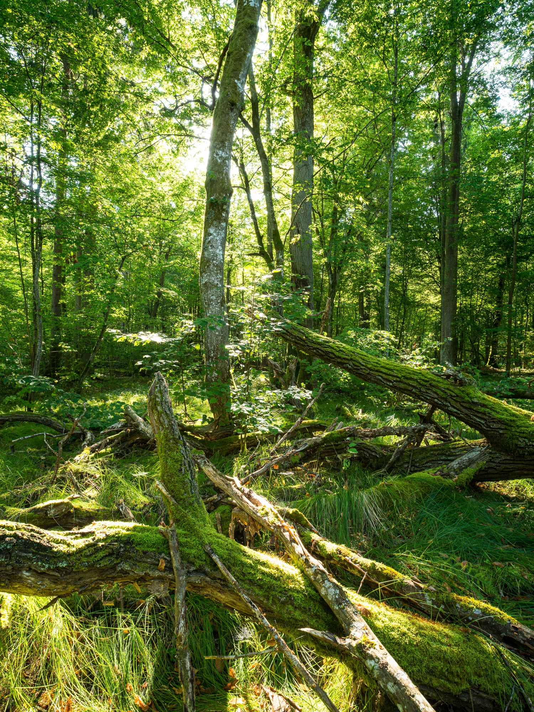

Nos actions pour la protection des fôrets française
Lors de nos actions nous mettons en avant 4 points majeur qui nous permettent d'agir pour la biodiversité et la solidatité intergénérationnelle.
- La multiplication des essences
- Le choix d'espèces de la région
- La résiliences au réchauffement climatique
- La mise en placede forêt nourricière
Retour de la forêt à Bourg-palette
Après plusieurs années d'effort avec les ainés de la ville nous avons réussi à reboissé la forêt de bourg-palette avec près de 25 essences locals d'abres et de buissons
Proctection et aménagement de la fôret de lavanville
La mobilisation citoyenne à réussi à mettre fin au projet de parking qui devait faire disparaitre une partie de la fôret de lavanville, nous avons en plus réussi à débitumer la place central pour y planter de nombreux arbres